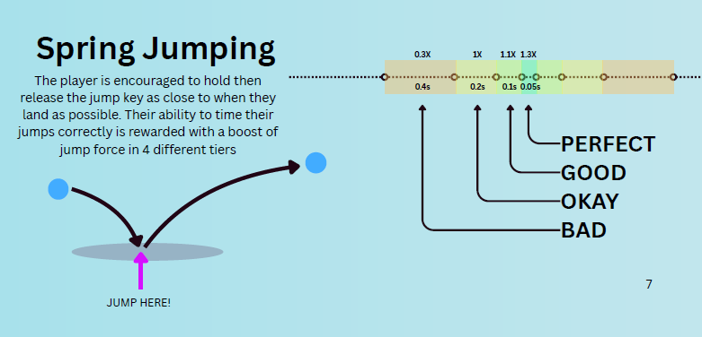

Samuel Cutts
DESIGN PROCESS
The "Pipeline"
Design is a very diverse and hard to pin down discipline. You have to consider a myriad of factors that are often unique to the individual project (pacing, aesthetics, player feedback, difficulty, progression, goals, story, etc). There is no "correct" way to tackle this. I've gained profficiency in a mechanics first approach utilizing the iterative method and playtesting to reach my design goals.
Ideation
I start my process by doing resarch, mostly by making mindmaps and gathering inspiring images and videos, associating the material with potential emotions, mechanics and themes. In this phase the freakier a source is the the more inspiring it is. Inspiration can come from anything, often the most emotive sources produce the wildest ideas that often turn into the most engaging mechanics.
Prototyping
My intuition is usually a bad indicator of how good an idea actually is, so I make quick prototypes to test those ideas out! I make heavy use of gif recordings and note taking to create documentation. I also make use of source control to create and switch in between variations and try out different ideas without losing previous work.
Assessment
Playtesting and solo testing is done automanitically by myself, but I seek to get feedback from as many people as possible, there's always some oversight when designing by myself. Watching people play and taking notes, asking generalized questions and getting feedback always yields surprising results and reveals things I didn't think of. I do this especcially in the beginning so I can ensure my project is going in the right direction, when the most changes can still be made.
habits and improvements
Some of the habits I have cultivated include keeping a journal for my personal and professinal projects. One of my biggest struggles with designing is tunnel vision. I'll often hyperfocus on a single mechanic or element in lieu of the whole experience. Though with colleagues I'm constantly talking through my process and so this can be resolved fairly quickly. A majour goal I've set for myself is learning to define good enough in the scope of a project. Re-evaluating myself often has been instrumental here.
_______________________________Documentation
Documentation is an important part of keeping our process accountable and actionable. I make use of charts and diagrams to visualize mechanics and their interactions. I also keep lists of mechanics and their details throughout the development process. Here is an excertp from a game design document I made for a recent project: ULTRASPRING. You can read the entire document here.
